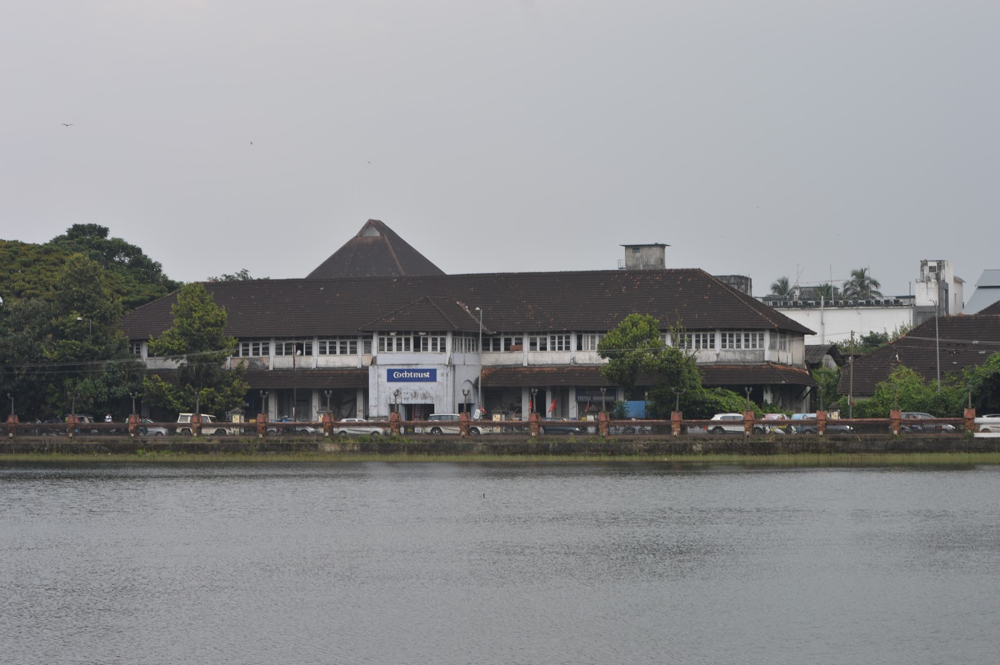
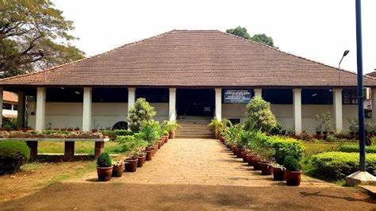
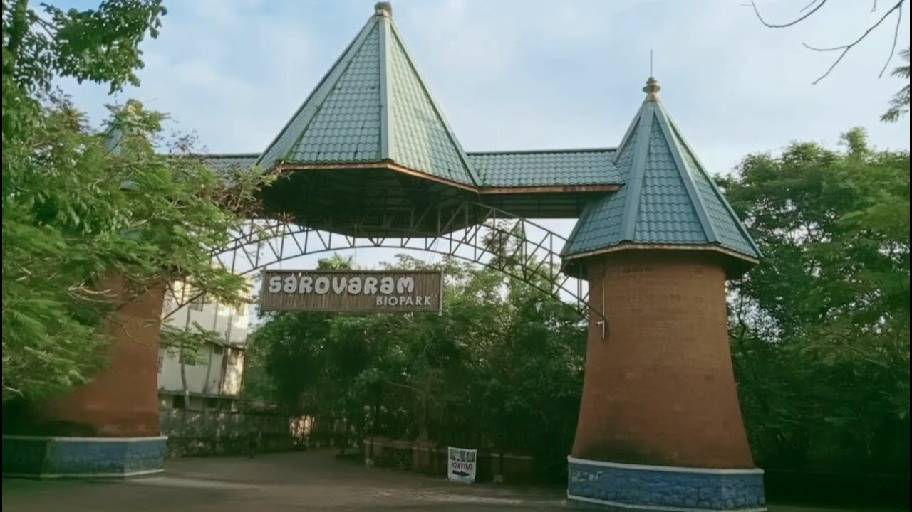

Kozhikode or Calicut district is a district of Kerala state, on the southwest coast of India. The city of Kozhikode, also known as Calicut, is the district headquarters. The district is 38.25% urbanised. Kozhikode district is bordered by the districts of Kannur and Mahé (Puducherry) to the north, Wayanad to the east, and Malappuram to the southThe exact origin of the name Kozhikode is uncertain. According to many sources, the name Kozhikode is derived from Koyil-kota (fort), meaning fortified palace.[13] The name also got corrupted into Kolikod, or its Arab version Qāliqūṭ and later its anglicized version Calicut.
Tourist attraction in Kozhikode!
Kozhikode Beach
Kozhikode Beach or Calicut Beach is a beach on the western side of Kozhikode, situated on the Malabar Coast of India. The beach is accessible through four road overbridges in the city. The beach has paved stones and illumination. There is one Lions Park for the children and an aquarium. Kozhikode beach has always been a prominent place for conducting public meetings. The beach road was renamed 'Gandhi Road' in 1934 after Gandhi visited Calicut in 1934.
Mananchira

Mananchira is a man-made freshwater pond situated in the centre of the city of Kozhikode in Kerala, southern India. The pond is 3.49 acres in area, is rectangular in shape and is fed by a natural spring.
S.M. Street
S.M. Street, abbreviation for Sweetmeat Street, also known as Mittai Theruvu, is a shopping street located in Kozhikode, Kerala, India . The history of SM Street dates back to time of the Zamorin when the ruler invited Gujarati sweetmeat makers to set up shop in the city and accommodated their shops just outside the palace walls.
Pazhassi Raja Museum

A veritable treasure trove for historians and connoisseurs of art, the Pazhassi Raja Museum is located in Kozhikode. The Pazhassi Raja Museum & Art Gallery adjacent to the museum displays the acclaimed paintings of Kerala's cherished artists, Raja Ravi Varma (1848 - 1906) whose works brought international repute to the State and his uncle Raja Raja Varma.
The museum is managed by the State Archaeology Department and has on display mural paintings, antique bronzes, ancient coins, models of temples, umbrella stones, dolmenoid cists (quadrangular burial chambers with capstones), and similar megalithic monuments.
Sarovaram

Sarovaram is an eco-friendly development near Kottooly in Kozhikode city in India. The park is situated adjacent to Canoly Canal. The project has been developed with an eco-friendly theme and is located in an ecosystem consisting of wetlands and mangrove forests containing bird habitats